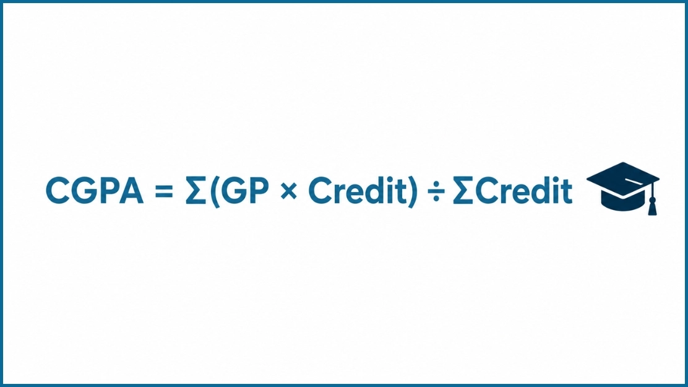

Your CGPA plays a major role in every stage of your academic journey, and understanding how it works is just as important. This online CGPA calculator helps you calculate your CGPA quickly using semester-wise course grades, credit hours, and grade points based on your university grading system. Simply enter your courses, select the GPA you earned, and the tool instantly generates a live CGPA result. It also supports multiple semesters, percentage conversion, and SGPA prediction, making it easier to analyze overall performance.
The CGPA (Cumulative Grade Point Average) is calculated using the total grade points earned across all semesters divided by the total credit hours completed.

Formula:
CGPA = (Total Grade Points Earned) ÷ (Total Credit Hours)